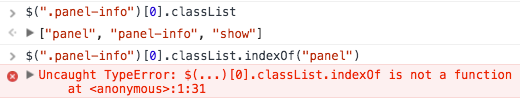

Live HTMLCollection
For most of the time I’ve been writing JavaScript I’ve had jQuery there to hold me up, providing an assortment of helper functions and methods that I think make life easier. I mean I’m fairly sure they’re supposed to, that’s what it says in their documentation. I realised I had never really tried to make a proper web application without it, so decided it was about time to do so.
Where are you jQuery?
I decided that a to-do type application that made use of local storage to remember tasks would be a good starting point, it would let me play with a web API and do some UI state management that’s incredibly easy to do in jQuery.
A lot of what this blog post wants to address comes from me trying to be somewhat clever. I have become incredibly used to the typical jQuery style selectors like $(".class") and figured how hard could that be to reproduce in a simple function. Behold.
function $(element) {
if (element[0] === '#') {
return document.querySelector(element);
} else if (element[0] === '.') {
return document.getElementsByClassName(element.slice(1, element.length));
} else {
return getElementsByTagName(element);
}
}
Seems good right? If we want an ID based element we use this querySelector method, or for a class we make use of getElementsByClassName to return some sort of collection of all elements with that class.
I figured I was set and continued upon my efforts, until I encountered something interesting. I had discovered that DOM elements contain a list of classes they currently have, a fancy new feature that has great support, and figured what an excellent way to toggle the visibility than to add and remove a show class from this set.

But it’s an array? Arrays have an indexOf function? This is when I started thinking I’d lost my touch a bit, but after a quick search around I discovered the culprit was that fact that this is not an array, but a DOMTokenList.
There are some specific methods here for class management, which jQuery handles really well for us with their .addClass and .removeClass methods, that have fairly strict browser requirements. I started using .add and .remove and everything worked as expected avoiding .replace since chrome does not support it.
Collections from selections
My efforts picked up again after this, having felt as if I learned something, so I pressed on. The next issue I encountered was an oddly shrinking array. Having become very used to how jQuery style selectors work, I selected the elements I wanted to hide, those being the ones currently shown, and use .hide() on them. Image the following scenario.
<div class="show">
<p>Content</p>
</div>
<div class="show">
<p>Content</p>
</div>
<div class="hide">
<p>Content</p>
</div>
I have a couple of div elements currently showing that I would like to hide, so I attempted the following.
var shown = $(".show"); // getElementsByClassName
for (var i = 0; i < shown.length; i++) {
console.log(shown);
shown[i].classList.remove('show');
shown[i].classList.add('hide');
console.log(shown);
console.log(shown.length);
}
This is where things became interesting. I was looping over this array of 2 elements, removing their show class and then adding a hide class to their class lists, but only one element was ever toggling, the second one.
The thing happening here is that document.getElementsByClassName returns an HTMLCollection. An HTMLCollection is a live collection that is updated when the DOM updates.
So what was happening there was as I removed the show class from the first element, the shown set of elements suddenly lost a member and went down to a length of 1. Now shown[i], or shown[0] was in fact the second element I had selected since the first one had disappeared from under me. I then exit the array early. That’s confusing, so here’s a code snippet explaining the steps.
var shown = $(".show"); // getElementsByClassName
console.log(shown) // [0-div1, 1-div2], 0- meaning 0th index
console.log(shown.length); // 2
// do for loop part
for (var i = 0; i < shown.length; i++);
// i starts at 0
shown[i].classList.remove('show'); // remove class from 0th element
/* Live updating happens and our shown variable changes */
shown[i].classList.add('hide'); // adds the hide class to the second div
console.log(shown); // [1-div2] // our live collection is now one member shorter
console.log(shown.length); // 1
// i becomes 1 at end of loop
// check for loop
// exit loop since (i < shown.length) becomes (1 < 1)
This can be fairly easily remedied by doing the operations in reverse and even using a while loop, I just found it profoundly odd that a live updating collection of elements is something that people would want. Here’s a way you could do it, using the fact that the length updates when a class is removed.
var shown = $(".show"); // getElementsByClassName
while (shown.length > 0) { // eventually the collection will empty
shown[0].classList.add('hide'); // do this first so it's not removed
shown[0].classList.remove('show'); // change and remove from collection
}
I ended up revising my original function to leverage the better version of the query selector, querySelectorAll.
function $(element) {
if (element[0] === '#') {
return document.getElementById(element.slice(1, element.length));
}
// fallback that should work for most
return document.querySelectorAll(element);
}
This meant I was dealing with NodeLists instead of the collections and the original logic worked fine, it was just interesting to see how different collections behave in the browser.
Types of collections in JavaScript
You are probably now wondering how many collections there are, and if you use jQuery a lot like me, how have you avoided using them for so long? The interesting thing is, and I never thought about it this way, is that all selections of elements are collections.
Even jQuery wraps the elements it selects in a special jQuery object with your favourite methods like .text() and .click() giving you access to jQuerys magical box of functionality.
If anything, creating this application made me question more of the inner workings of jQuery and I am now more aware of the type of collection I’m dealing with and the attached methods after using any sort of selector.
Finally
This held me up a bit yesterday and I felt as if jQuery has slightly altered my understanding of how selectors work, but it was definitely a useful learning experience and I intend to keep attempting to implement more applications without jQuery. The main takeaway being, if it looks like an array in the console, it might not have the method you’re expecting, so double check!